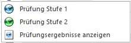
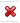
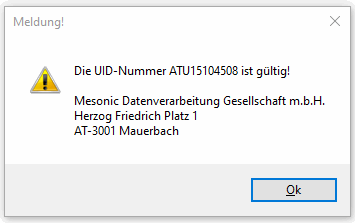
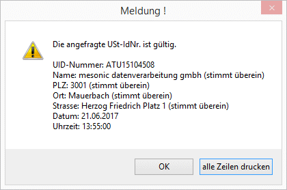
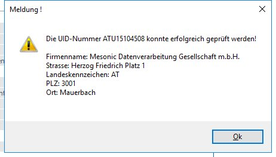

Ø UID-Prüfung
Durch Drücken des Buttons wird ein Menü aufgeklappt. Je nach Ländereinstellungen stehen verschiedene Prüfroutinen für die UID-Nummer zur Verfügung.

Das Icon des Buttons für die UID-Prüfung der Prüfung Stufe 2 wird abhängig vom Prüfstatus der UID angezeigt.
ungeprüft
gültig

nicht gültig
Wenn keine UID eingetragen ist oder die eingetragene UID nicht prüfbar ist (in Mandanten mit Länderkennzeichen D können keine DE-UIDs geprüft werden), wird das Standard-Icon angezeigt. Dasselbe passiert auch für alle Mandanten mit einem anderen Länderkennzeichen als A und D.
Ø Prüfung Stufe 1
Nach Drücken des Buttons wird für die eingetragene UST-ID-Nummer die UID-Prüfung der Stufe 1 per Webservice-Aufruf durchgeführt. Das Ergebnis der Prüfung wird in einer Messagebox angezeigt (UID gültig, UID ungültig oder Fehler bei der Prüfung). Wenn mit dem Prüfergebnis auch Name und/oder Adresse zur geprüften UID übermittelt werden, werden auch diese in der Messagebox angezeigt.
Sie erhalten bei einer gültigen UID-Nummer folgendes Ergebnis:

Ø Prüfung Stufe 2 (Deutschland)
Nach Drücken des Buttons wird die Prüfung auf http://evatr.bff-online.de/eVatR durchgeführt. Das Ergebnis der Prüfung wird in einem eigenen Fenster gemeinsam mit den übermittelten Daten angezeigt, wobei die Felder einzeln geprüft und bestätigt werden.
Neben der ausländischen UID-Nr. muss auch die eigene UID-Nr. im Mandantenstamm korrekt hinterlegt sein, ansonsten gibt es einen entsprechenden Hinweis.

Ø alle Zeilen drucken
Über diesen Button kann das Ergebnis der UID-Nummernprüfung ausgedruckt werden.
Ø Prüfung Stufe 2 (Österreich)
Die UID-Nummer wird mittels FinanzOnline-Webservice geprüft, dies ist vom Benutzer abhängig. Der Benutzer muss im Mandantenstamm die entsprechende Berechtigung für die Überprüfung über WebServices hinterlegt haben. Kann die Prüfung erfolgreich durchgeführt werden, wird eine Meldung mit den vom Webservice übermittelten Daten angezeigt, das Ergebnis wird auch in das FinanzOnline-Journal geschrieben. Im Fehlerfall wird ebenfalls eine Meldung ausgegeben.

Ø Prüfergebnisse anzeigen
Es wird eine Liste am Bildschirm ausgegeben, in der alle erfolgreichen Prüfungen für die aktuelle
Kontonummer bzw. für die eingetragene UID-Nummer aus dem FinanzOnline-Journal aufgelistet werden. Sind keine Prüfungsergebnisse vorhanden, wird eine entsprechende Meldung ausgegeben.
Hinweis
Bei Mandanten mit anderen Länderkennzeichen wird sofort die Prüfung auf Internetseite der EU durchgeführt.